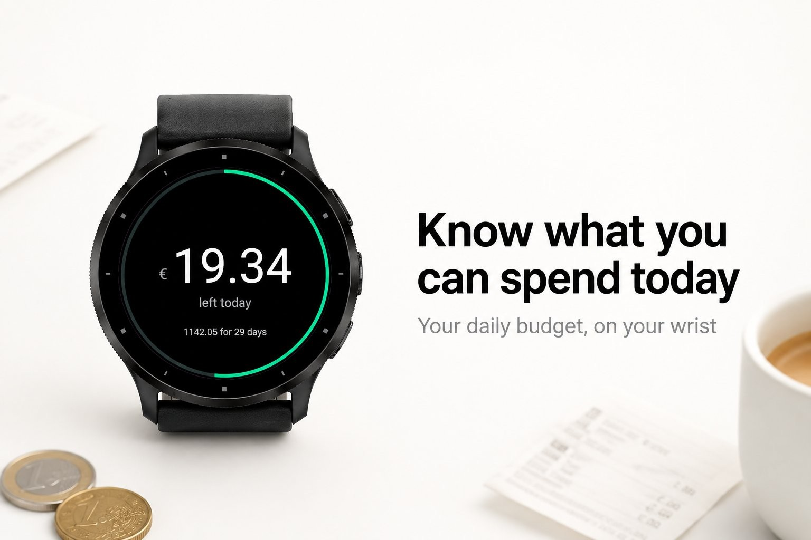
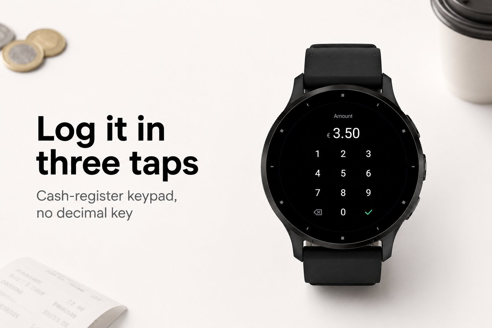
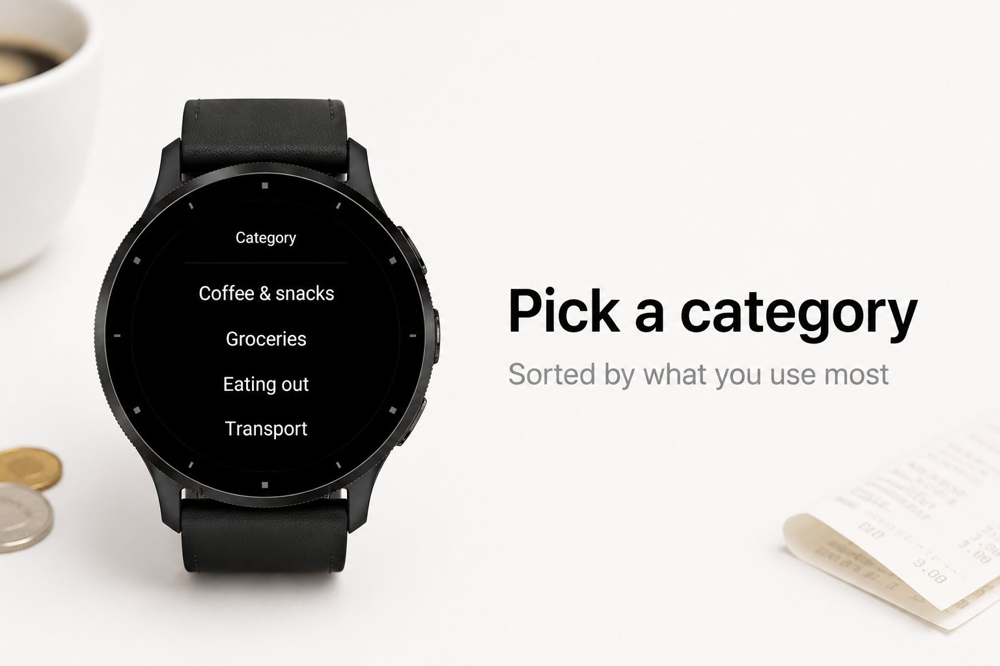
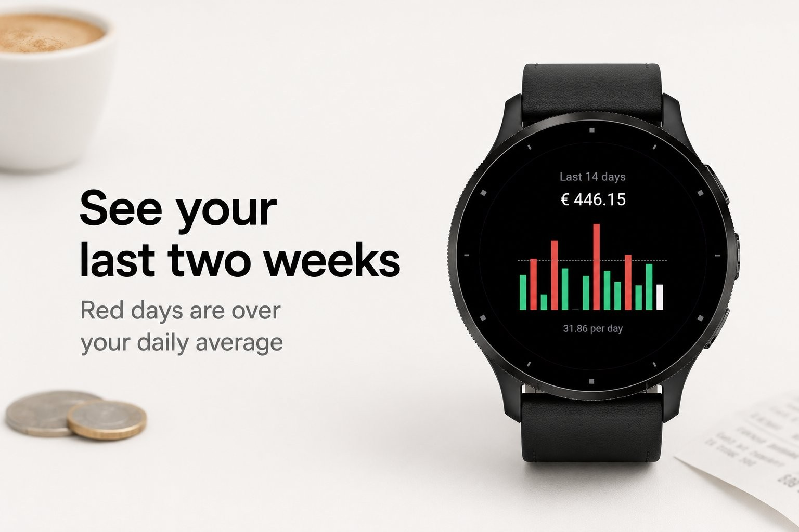
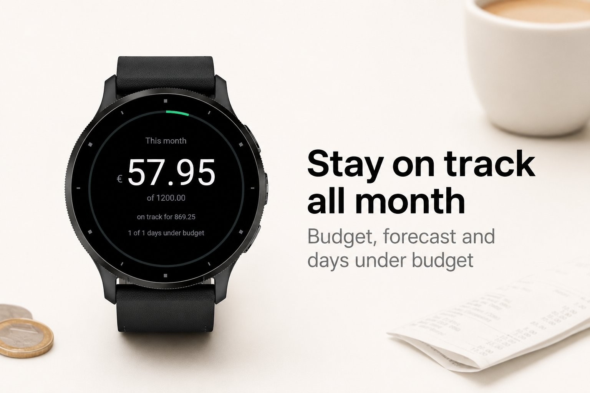

Money & work · Device app
Daily budget: what you may still spend today.





Spent puts your daily budget on your wrist. Log an expense in three taps, right at the checkout, and see at a glance what you can still spend today. No phone, no bank login, nothing leaves your watch.
Set a monthly or weekly budget and Spent divides what is left over the days that remain, every single day. Spend less today and tomorrow gets a bit more; overshoot and the number turns red. A thin ring shows how much of today you have used.
A touchscreen watch. Everything is stored on the watch itself.